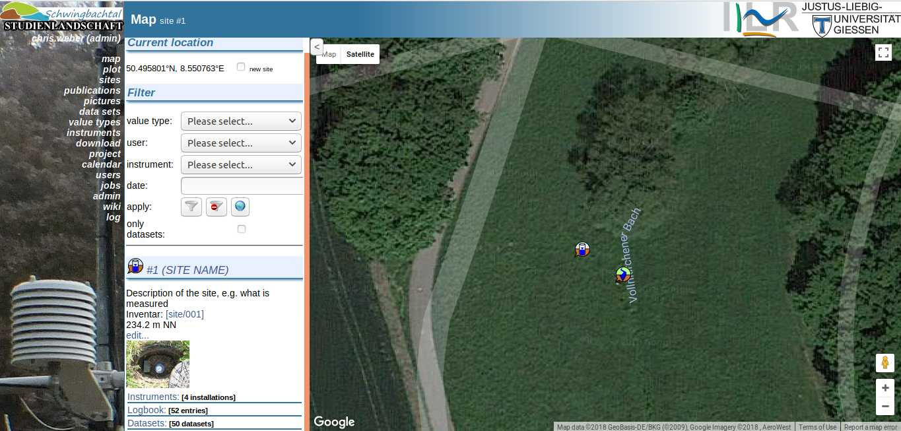

Views¶
This section describes the different views of the web interface
Map¶
Accessible via /map
In this view a user can browse the installations of field instruments, which are called sites. Or the user can create new sites. Sites are meta data, which can be attached to measurement data. The sites are integrated into a large Google Map element on the right. There is the opportunity to filter the displayed sites.

Plot¶
Accessible via /plot
The user is able to display or download measurement data in an customizable fashion. A once configured plot can be saved for future use.

The configuration of a plot image¶
In this paragraph, the configuration of a plot image is described in depth.
TBD.
Sites¶
Accessible via /site
This pages gives insight to the locations in the field, where measurements are made. For e.g. there are all datasets listed, which are measured and later online registered at this location.

Publications¶
Accessible via /publications
The content of this page can be configured at run time via a browser editor. It can be used to be a list of all publications of interest for this site. Just click the “edit” button above and save your changes afterwards. At this point the page is empty. A example of such a page can be found here
Data sets¶
Accessible via /dataset
On this view, the user can get information about datasets, such as at which site the measurement was made, what the date time range of the records are or who uploaded the dataset. See the schema definition of datasets database model for a complete list of available informations.
Via the goto-button its possible to jump to a any dataset by its number.
Value Types¶
Accessible via /valuetype
On this page a user can access information of all registered valuetypes of the page.
On the right the user can inspect a list of all instrument in alphabetical order and
navigate with a click between them.
Also its possible to add valuetypes via the new entry button on top on the right side.
See the schema definition of valuetypes database model for a complete list of available informations.
Instruments¶
Accessible via instrument
When visiting this page a user can access information about the instruments used in the field. On the right the user can inspect a list of all instruments in alphabetical order.
Download¶
Accessible via /download
On this page a user can manage files that preferably include measurement data.
Files can be uploaded via the form above, to be saved permanently on the server.
The interface is similar to a file browser. There are files and directories.
By clicking on a directory, the browser opens a new view by listing all files in this folder.
The special case of click on a file, triggers the import process. Briefly the import process
checks if a *.conf file present in the current or a parent directory. Depending on the
existence of such a config file and the file ending of the chosen file, the process enters
one of three import process branches. The import process is describe in more detail
in the development chapter.
Project¶
Accessible via /project
A project corresponds to none or multiple datasets, which are under the sphere of responsibility of this project. This can be used to organize all datasets, e.g. in there institute projects or depending on there funding initiaitives. For more infos see the schema model.
The description text is published via the CUAHSI WaterOneFlow interface, for each time series.
Calendar¶
Accessible via /calendar
In this view a user can have a eye on all tasks and their due date. The tasks are linked to their respective jobs. For example the calendar can be used to keep track of measurement jobs, which then are done by people that are registered as users of the database.
Users¶
Accessible via /person
On this page the user can examine a list of all registered users and information about them, such as their role or access level, phone number and so on.
Also administrative functionalities, such as change a password or marking a user as inactive (only as administrator) can be done via this page.
Jobs¶
Accessible via /job
At this view tasks can be created. Most importantly a task has a due date, description and an assigned user. Task will be displayed in the calendar view. For more information see the database model of a job.
Wiki¶
Accessible via /wiki
Here the user can maintain a project-specific wiki page, where information only regarding the project has its place. For example …
This the content of the wiki can also be edited, created and deleted via a similar button menu on top of the page as on the publications page.
Admin¶
Accesible via /admin

This is the monitoring view, which displays metrics regarding the server platform, for example the Postgres database, hardware stats and eventually the HydroServerLite instance. The view is only Accessible for a user with admin privileges.
The view gives information about
- stats on the local hard drive
- Status of Version Control System via Git
Additionally if configured:
- Validity of the Schwingbach => ODM schema mapping
- Accessability of the WaterOneFlow Service
- Status of daily jobs, such as the Transformed Timeseries
- Status of the harvesting done by cuahsi